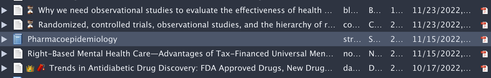
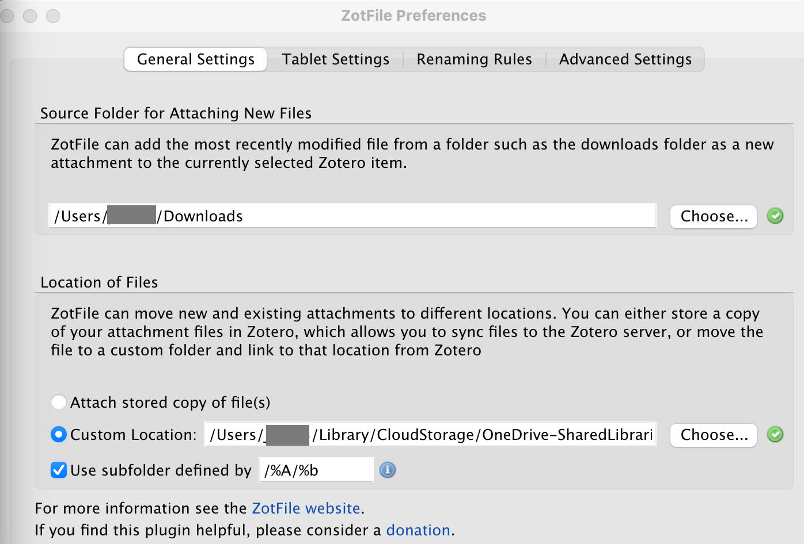
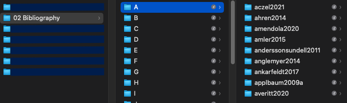
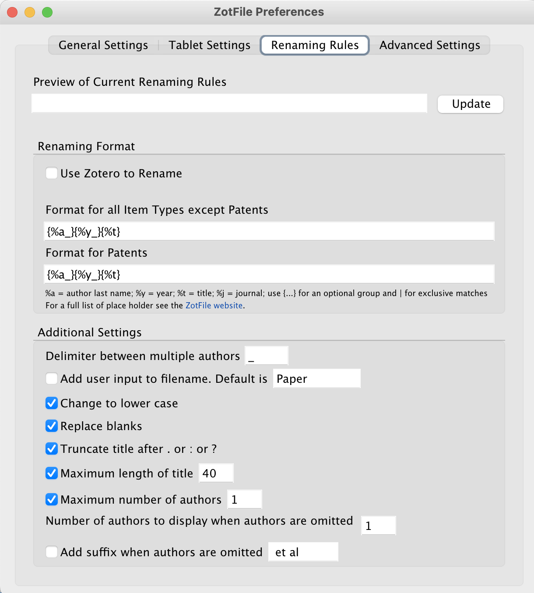
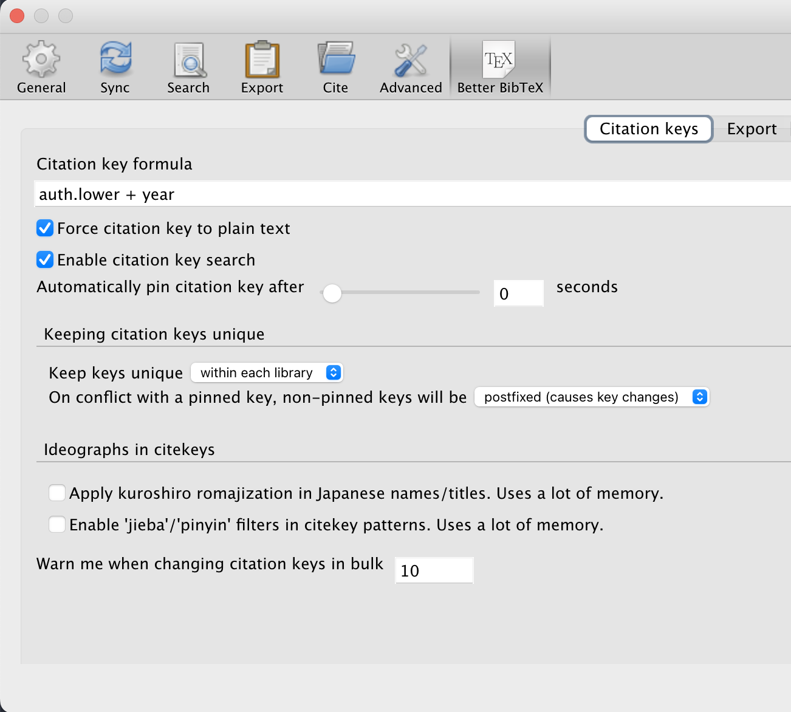

Zotero Workflow
Throughout my academic work, I arrived at a workflow for reviewing literature that I really like. Here is a description.
I use Zotero as a reference manager. I strongly recommend using a free and open-source reference manager to keep your libraries accessible regardless of your subscriptions. Another good option is jabref, however, I think Zotero is more user-friendly and has a bigger community of contributors. I would try to refrain from using Mendeley since they are part of Elsevier, a big publisher with rather questionable business practices. Skimming its wikipedia already gives you an idea, this guardian article is a longer read but worth it.
Already the default Zotero application is pretty good, it is of course possible to install add-ons to your browser and Word to integrate it with your literature search and writing process. However, to get the most out of the program, some helpful settings and add-ons can be recommended.
General Set up
I store my entire collection of articles and books in a single Zotero library. In there, I have different collections for different topics. For example, I have a collection for my PhD thesis, the courses I teach, the books I like, and different collections of my favorite papers from different fields. To increase the overview I use some tweaks to the default settings.
Go to
viewand check the ‘Show Items from Subcollections’ option. If unsure in which subfolder you stored an article, you can now search for it in the main folder.In the General Settings -> Miscellaneous, untick the box ‘Automatically tag items with keywords and subject headings’. I find this clutters the tags which I frequently use to categorize my articles. I try to keep them clean.
To assign different attributes to some paper, I use emojis as tags and then assign a color to them. The way you do it is a) Click on a paper you have not read yet. In the right panel, click on
Tagsand add an emoji of your choice. b) This tag will now show up in the bottom left corner. Right-click on it, and assign a color to it. Now the emoji will always show in front of the title. For example, I use ⏳ to indicate an unread article. See below. 
Add-Ons
Add-ons are small programs that extend the functionality of Zotero widely. Here is a list
Zotfile for data storage: The free cloud-storage will be filled up rather quickly. However, if you want to work on your library from different computers, it can be really handy to have it stored in the cloud. The most convenient way is to upgrade your account, for $20 a year, you get 2GB of storage. See here for more info. I opted for a different solution and use a OneDrive folder to store my Zotero library. Setting up requires some steps:
Create a folder in a directory where you want your files to be stored.
Download and install theZotfile add-on.
In Zotero settings, go to
Syncand uncheckSync attachment files in My LibraryClick on
Tooland open Zotfile preferences. TheSource Folder for Attaching New Filesshould typically be your download folder1. Below, set the Location of Files toCustom Folderand select the folder you created in 1a. If you leave theUse subfolder defined byunchecked, all files will be stored in the folder you created in 1a. If you check it, you can specify subfolders based on e.g. author, year, etc.
Here is what I use:  And how it looks: 
In Zotfile,
Advanced Settings, checkRemove special characters (diacritics) from filename.In Zotero settings, go to Advanced > Files and Folders and set
Linked Attachment Base Directoryto the folder you created in 1a. Repeat this on every computer you want to access the files from.Set the renaming rules in the Zotfile preferences. I use the following: 
In your
My Librarywindow, click the paper clip to sort on attachment column. Select all papers that have a file attached and right-click on them. SelectRename and Move.This will move and rename all files to the folder you specified in 1.a. You might want to store a safety copy of your Zotero library beforehand in case something goes wrong.
Now, every newly created entry will automatically be stored in the specified way. Only when using drag and drop, it might not work and you have to manually selecet
rename and moveagain.Note that if you delete an item now, you will have to delete the pdf by right-clicking on the item and select “Show File.”
Better BibTex is great for creating citation keys and for exporting. This is my citation key settings:  To export it as a .bib file, right-click on
My Libraryand selectExport Library. SelectBetter BibLaTex, uncheck abbreviated journal articles and checkkeep updated. I usually store this file in the directory where I am writing my paper.
Other useful add-ons:
Night for Zotero: I use this to change the color scheme of Zotero.
Inciteful Zotero Plugin: This can help with finding new papers that are similar to a selected one.
Zotero OCR: This Zotero plugin adds Optical Character Recognition to Zotero. So you will always be able to search for / highlight text in your PDFs.
Zutilo: An add on that is not so important to my workflow, but sometimes it is handy to copy paste multiple tags.
A last nice thing to know is that you can drag and drop multiple files into Zotero and it will very accurately create the reference. You can also select multiple items and drag them to a tag in the bottom left corner to assign them all the same tag.
Footnotes
This only specifies which folder opens when you right-click on a Zotero reference and select
Add attachment from source folder.I don’t use this ever.↩︎